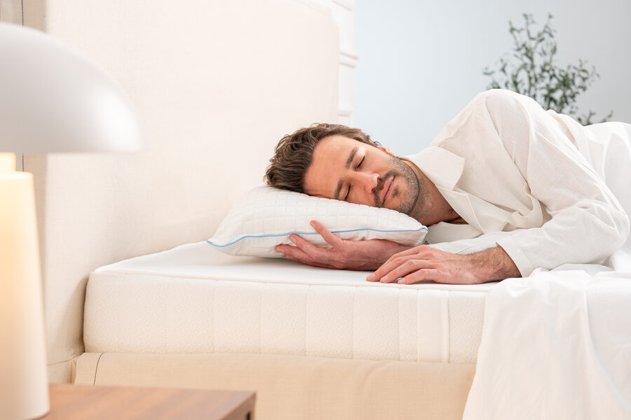
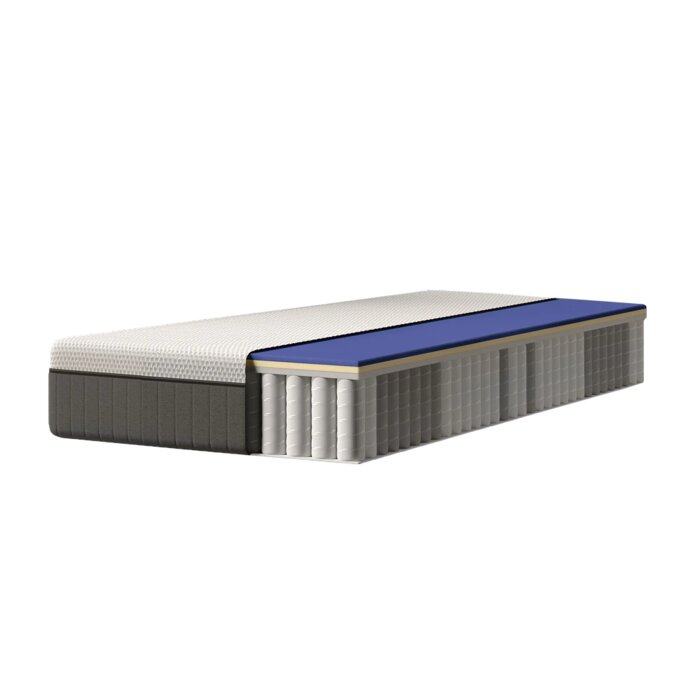
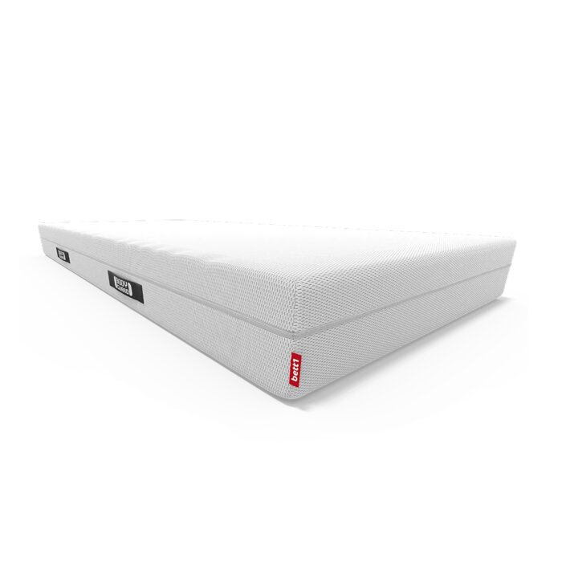
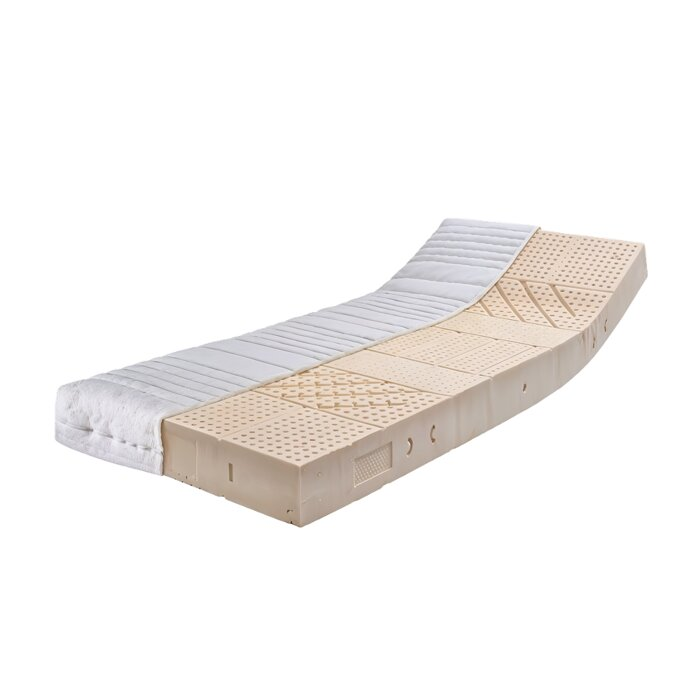
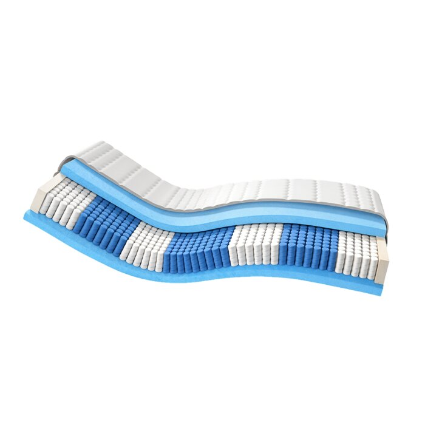
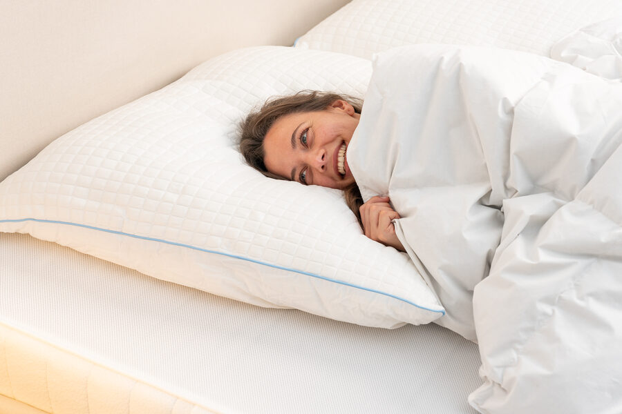

Worauf Sie beim Matratzenkauf achten sollten
Viele Matratzen sehen auf den ersten Blick ähnlich aus. Der Unterschied zeigt sich erst nach ein paar Monaten – oder eben nicht, wenn die Qualität stimmt. Vier Punkte sind entscheidend:
Wir haben die fünf meistgekauften Modelle auf dem deutschen Markt anhand dieser Kriterien geprüft. Das Ergebnis: nur ein Modell erfüllt alle vier Punkte gleichzeitig.
Gut zu wissen: Unabhängige Warentests zeigen immer wieder, dass Härtegrad-Angaben der Hersteller oft nicht mit der tatsächlich gemessenen Härte übereinstimmen. Auch die Haltbarkeit lässt sich nur mit einem Dauertest über eine simulierte Nutzung von mehreren Jahren seriös beurteilen – ein kurzer Liegetest im Laden sagt darüber wenig aus.
Warum die richtige Matratze für Ihren Schlaf entscheidend ist
Im Schlaf soll sich die Wirbelsäule in ihrer natürlichen, doppelt S-förmigen Haltung entspannen können. Stützt die Matratze nicht richtig, kann die Wirbelsäule über die Liegedauer abknicken oder durchhängen – typische Folgen sind Verspannungen und ein Aufwachen mit steifem Rücken. Eine passende Matratze federt vor allem an den Druckpunkten Schulter, Hüfte und Becken ab, während sie den restlichen Körper ausreichend stützt.

Welcher Härtegrad zu welcher Schlafposition passt
Wichtig zu wissen: Härtegrad-Bezeichnungen wie H2 oder H3 sind nicht genormt – jeder Hersteller definiert sie etwas anders. Verlassen Sie sich deshalb nicht allein auf die Kennzeichnung, sondern auch auf ausreichend lange Probeliegezeiten von mehreren Wochen, bis sich der Körper an eine neue Matratze gewöhnt hat.
Warum Materialqualität und Hygiene über die Jahre entscheiden
Das Raumgewicht (kg/m³) beschreibt die Dichte des Schaumstoffkerns und ist ein guter Indikator für Langlebigkeit: Je höher das Raumgewicht, desto formstabiler bleibt die Matratze und desto später bilden sich Liegekuhlen. Unabhängig von der Qualität empfehlen Experten, eine Matratze spätestens nach 8 bis 10 Jahren auszutauschen – auch aus hygienischen Gründen. Über die Nutzungsdauer sammeln sich Hautschuppen, Feuchtigkeit und Hausstaubmilben im Kern, was besonders für Allergiker relevant ist. Ein abnehmbarer, bei mindestens 60°C waschbarer Bezug macht die Pflege deutlich einfacher.
www.hisleeptime.de
- ✓ 2 Härtegrade: 45–150 kg
- ✓ Ideal für Rücken-, Seiten- & Bauchschläfer
- ✓ Neue Hybridtechnologie
- ✓ Atmungsaktiv, waschbar 60°C
- ✓ 30 Nächte risikofrei testen
- ✓ Made in Germany, OEKO-TEX
- ✓ Gratis Versand & Rückversand
- ✓ 50 € Rabatt ab 2. Matratze
- ✕ Aufgrund hoher Nachfrage oft ausverkauft
15% Extra-Rabatt heute mit Code SCHLAF15
Unser Warenbericht
Diese Matratze überzeugt durch höchsten Liegekomfort, der durch beste Materialien und ein hohes Maß an Personalisierung erreicht wird. Sie ist für alle Körpertypen ideal und in zahlreichen Längen erhältlich.
Härtegrade
Die beiden Seiten der Matratze besitzen unterschiedliche Härtegrade und lassen sich einfach wenden. Dadurch ist das Modell für Körpergewichte zwischen 45 und 150 kg ideal. Der mittlere Härtegrad (H3) unterstützt die Wirbelsäule und ist für Rücken- und Seitenschläfer empfehlenswert. Der harte Grad (H4) verhindert Kuhlenbildung bei höherem Körpergewicht.
Qualität & Formstabilität
Der rückfedernde Hybridschaumkern behält seine Formstabilität selbst bei hohem Gewicht. Der Hersteller garantiert eine Lebenszeit von mindestens 10 Jahren. Der Funktionsbezug aus 3D-Mesh ist besonders atmungsaktiv, hautschonend und hypoallergisch.
Sicherheit & Umwelt
Die in Deutschland hergestellte Matratze erfüllt die OEKO-TEX 100 Standards und ist garantiert schadstofffrei. Sie enthält keine tierischen Bestandteile und ist deshalb vegan.
Serviceversprechen
Hisleep wirbt offen mit seiner Geld-zurück-Garantie. Wir haben eine benutzte Matratze nach 29 Nächten Probeliegen zurückgesandt – der Gesamtpreis wurde zwei Tage nach Erhalt der Ware ohne Probleme zurückerstattet.
Und die anderen Modelle im Vergleich?
Fairerweise: Nicht jedes Modell ist schlecht. Aber der Abstand zum Testsieger ist in jedem Fall deutlich.

Emma Original Pro Matratze
666,65 €
Kurz erklärt: Eine zu geringe Bauhöhe stützt die Wirbelsäule oft nicht ausreichend, und frühe Liegekuhlen verringern die Druckentlastung an Schulter und Hüfte spürbar.

Bett1 BODYGUARD Matratze
199,00 €
Kurz erklärt: Die Zonierung unterstützt den Körper gut, die mittelmäßige Atmungsaktivität kann sich in warmen Nächten aber unangenehm bemerkbar machen.

Ravensberger Latexmatratze
449,00 €
Kurz erklärt: Die gute Bauhöhe ist ein Pluspunkt, verliert durch die starke Kuhlenbildung aber schneller an Stützkraft für die Wirbelsäule als erwartet.

AM Qualitätsmatratzen Deluxe Taschenfederkernmatratze
332,68 €
Kurz erklärt: Ein niedrigeres Raumgewicht führt hier zu schnellerer Kuhlenbildung – die Matratze stützt die Wirbelsäule dadurch spürbar schlechter als vergleichbare Modelle.
Häufige Fragen zum Matratzenkauf

Wie oft sollte ich meine Matratze wechseln?
Unabhängig von sichtbaren Verschleißerscheinungen empfehlen Experten einen Wechsel nach spätestens 8 bis 10 Jahren – vor allem aus hygienischen Gründen. Über die Nutzungsdauer sammeln sich Hautschuppen, Feuchtigkeit und Hausstaubmilben im Matratzenkern. Zeigen sich bereits vorher Liegekuhlen, ein muffiger Geruch oder morgendliche Rückenschmerzen, ist ein früherer Wechsel sinnvoll.
Welcher Härtegrad passt zu meinem Körpergewicht?
Als grobe Orientierung gilt: Je höher das Körpergewicht, desto fester sollte der Härtegrad ausfallen, damit das Becken nicht zu tief einsinkt. Da Härtegrad-Bezeichnungen wie H2 oder H3 aber nicht genormt sind und jeder Hersteller sie etwas anders definiert, ist eine ausreichend lange Probeliegezeit wichtiger als die reine Kennzeichnung.
Wie teste ich eine neue Matratze richtig?
Ein kurzer Liegetest im Geschäft sagt wenig darüber aus, wie sich eine Matratze über Wochen anfühlt. Der Körper braucht meist einige Nächte bis Wochen, um sich an eine neue Liegefläche zu gewöhnen. Ein Rückgaberecht mit ausreichend langer Testphase – idealerweise mehrere Wochen statt nur 14 Tage – ist deshalb ein wichtiges Auswahlkriterium.
Was bedeutet Raumgewicht und warum ist es wichtig?
Das Raumgewicht (kg/m³) gibt an, wie dicht der Schaumstoffkern einer Matratze ist. Je höher der Wert, desto formstabiler bleibt die Matratze über die Jahre und desto später bilden sich Liegekuhlen. Ein hohes Raumgewicht ist deshalb ein guter Anhaltspunkt für Langlebigkeit – unabhängig vom Härtegrad, der nur die gefühlte Festigkeit beschreibt.
Ihr Rücken hat eine bessere Nacht verdient
Testsieger 2026 + 15% Extra-Rabatt mit Code SCHLAF15
Zum Angebot »🇩🇪 Made in Germany · 30 Tage Probeschlafen · Kostenloser Versand